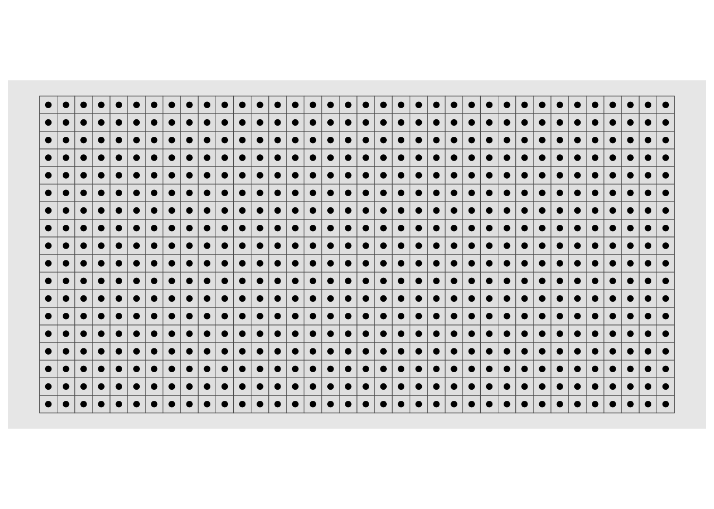

library(sf)
library(tidyverse)
library(tidymodels)
library(ggplot2)
library(dplyr)
library(ggmap)
library(leaflet)
library(concaveman)An Introdution to Geospatial Data Structures
Abstract
In this project, we navigate the geospatial data structures through the sf package in RStudio. First, we focus on a detailed exploration of spatial objects, highlighting their creation and practical applications. We use visualization techniques, exemplifying how to represent clusters as polygons, map U.S. states, and associate species with locations, showing the geospatial data structures in visualization and analysis. Additionally, a brief overview of spatial Poisson modeling is provided on how to model and predict.
Table of Contents
2. Using sf Objects to Record GeoSpatial Polygons
3. Creating a 2D Polygon on Real Data
Summary
This Vignette provides a comprehensive introduction to geospatial data structures using the “sf” package in R. We begins by introducing basic spatial structures within the “sf” package, including points, lines, and polygons.
We’ll illustrate how to convert vector data into “sf” objects, creating 2D polygons that represent clusters of geographical points. Although many methods of Geospatial Data are complex, we will explore two simple methods: cluster grouping, which condenses data into 2D polygons, and centroid polygons, which separate data points in dense clusters.
A real-world example follows, demonstrating the creation of a 2D polygon map of the United States using “sf” objects. Furthermore, the integration of attributes with geospatial data is demonstrated by associating invasive species data with states, allowing for efficient filtering and visualization.
Finally, we will briefly explore modeling with geospatial data, introducing a spatial Poisson model to predict species occurrences. The process involves preparing a spatial weights matrix, building the model, and making predictions based on the spatial Poisson model. However, this process is complex and require massive computing power to execute. Therefore, we leave it to the readers to further explore this topic.
1. The “sf” Package
The R-package we will be using for this demonstration is the “sf” package. It adopts the “Simple Features” formal standard, outlining a storage and access model for spatial geometries such as points, lines, and polygons. A geometry is considered simple when it comprises points connected by straight line segments and avoids self-intersections.
1.1 Basic Spatial Structures in “sf”
Some of the basic spatial objects that are in the “sf” package for dealing with vector spatial data include:
Points: 2D or 3D data consisting of a single coordinate or a set of coordinates.
Lines: A line object is a spaghetti collection of 2D coordinates
- A Lines object is a list of one or more line objects, for example all the contours at a single elevation.
Polygons: A Polygon object is a spaghetti collection of 2D coordinates with equal first and last coordinates
- A Polygons object is a list of one or more Polygon objects, for example islands belonging to the same country.
A simple feature object is stored as a “sf” object. The image above is a visualization of the “sf” objects.
1.2 Creating a “sf” object
Let’s create an example “sf” line object. A line object is characterized by points in some coordinate space and connected by a chord we call line.
First, we will define the lines themselves with st_linestring()
lnstr_sfg1 <- st_linestring(matrix(runif(10), ncol=2)) # a line with 10 points
lnstr_sfg2 <- st_linestring(matrix(runif(10), ncol=2)) # ncol = 2 specifies the dimensionNext, we will combine the two lines into a single feature before transforming it into a single “sf” object.
(lnstr_sfc <- st_sfc(lnstr_sfg1, lnstr_sfg2)) # just one feature hereGeometry set for 2 features
Geometry type: LINESTRING
Dimension: XY
Bounding box: xmin: 0.1050707 ymin: 0.1058156 xmax: 0.9518242 ymax: 0.9687663
CRS: NANow that we have 2 lines combined into a single feature, we haven’t actually assigned any meaning to the 2 lines yet. Let’s give them some attributes! Let’s pretend that these two lines are a highway and we they each have an attribute `car_per_hour` describing the number of cars that travels through them every hour.
dfr <- data.frame(id = c("hwy1", "hwy2"),
cars_per_hour = c(78, 22))
(lnstr_sf <- st_sf(dfr , lnstr_sfc)) # 2 lines each with an attribute cars_per_hourSimple feature collection with 2 features and 2 fields
Geometry type: LINESTRING
Dimension: XY
Bounding box: xmin: 0.1050707 ymin: 0.1058156 xmax: 0.9518242 ymax: 0.9687663
CRS: NA
id cars_per_hour lnstr_sfc
1 hwy1 78 LINESTRING (0.5921889 0.105...
2 hwy2 22 LINESTRING (0.6737138 0.499...Now we have a data-frame that associates an attribute to a spatial structure rather than another data point!
ggplot() +
geom_sf(data = lnstr_sf["id"]) +
theme_minimal()2. Using sf Objects to Record GeoSpatial Polygons
With Geospatial Data structures, one can give geographical meaning to their data.
We will explore two simple ways to record geospatial data. Two dimensional polygons using border data and 2 dimension polygons using centroid data.
2.1 2D Polygons using Vector (Border) Data
Now that we understand how to create a sf object; let’s demonstrate an sf object that contains geospatial meaning. Let’s take 3 clusters of vector points a, b, and c and showcase the utility of the sf object.
Looking at the points above, there is clearly some implicit relationship between the point clusters. However, it would be incredibly difficult to identify the clusters if there were more points and more variables.
Location gets increasingly difficult to keep track of as we get higher and higher dimensions in our dataframe. Therefore, instead of keeping every coordinate of the location, we can keep the geometries themselves as objects in the dataframe.
Going back to the previous example, using the sf package, we can then treat these cluster points as coordinate points and draw a polygon. The reason why we call is the border points is that these vectors quite literally draw the borders of the area that encapsulates the data points.
# Use the concave pacakge to visualize the sf object after grouping
x <- P$Fr[1]
final_P <- lapply(unique(P$Fr), function(x) {
group <- P[P$Fr == x, ]
conc <- concaveman::concaveman(group, length_threshold = 0,
concavity = 0.999999)
conc$Fr <- x
conc
}) %>% bind_rows()
# plot the graph
ggplot(final_P) +
geom_sf(aes(fill = Fr)) +
geom_sf(data = P, fill=NA, shape=21, size=0.7) The datapoints are recorded as 2D polygons. The graph above gives a visual representation of what the “sf” package is doing to our data structure.
2.2 2D Polygons Using Centroids
The first method is useful for when we want to group data points. The Centroid method is more useful for when we want to separate the data. Consider the following cluster:
# Generate some centroids
centroids <- st_make_grid(what="centers") %>% st_sf()
plot(centroids)Centroid polygons are useful for when we want to distinguish individual data points in a dense cluster like the one above. We can define a border for each point and we are able to effectively separate the points.
# Make a new grid from them
cellSize <- 10
grid <- (st_bbox(centroids) + cellSize/2*c(-1,-1,1,1)) %>%
st_make_grid(cellsize=c(cellSize, cellSize)) %>% st_sf()
ggplot() + geom_sf(data=grid) + geom_sf(data=centroids)
TL:DR, we have gone over two techniques in storing geospatial data. Cluster grouping condenses the dataframe into 2D polygons; on the other hand, drawing polygons around centroids expands the dataframe into 2D polygons.
3. Creating a 2D Polygon on Real Data
Using everything we’ve discussed so far, let’s draw a geospatial map. First we will load in a vector of coordinates.
us_geo# A tibble: 48 × 3
name geometry iso_code
<chr> <chr> <chr>
1 Alabama MULTIPOLYGON (((-88.053375 30.506987, -88.0510879999999… US-AL
2 Arizona POLYGON ((-114.816294 32.508038, -114.814321 32.509023,… US-AZ
3 Arkansas POLYGON ((-94.6178329666013 36.4994141203285, -94.61764… US-AR
4 California MULTIPOLYGON (((-118.604415 33.478552, -118.598783 33.4… US-CA
5 Colorado POLYGON ((-109.060253 38.599328, -109.059541 38.719888,… US-CO
6 Connecticut MULTIPOLYGON (((-72.761427 41.242333, -72.759733 41.248… US-CT
7 Delaware MULTIPOLYGON (((-75.565546 39.51485, -75.56174299999999… US-DE
8 Florida MULTIPOLYGON (((-80.176276 25.525054, -80.1739499999999… US-FL
9 Georgia MULTIPOLYGON (((-81.27939099999999 31.30792, -81.277159… US-GA
10 Idaho POLYGON ((-117.242675 44.396548, -117.234835 44.399669,… US-ID
# ℹ 38 more rowsWhat we have just loaded in is a dataframe containing the 48 States (Sorry Hawaii and Alaska) and their latitudes and longitudes of points along their perimeter.
However, a vector of coordinates is hard to interpretate. Therefore, we can convert this vector data into geospatial data by creating a “sf” object.
SQ_example <- st_as_sf(us_geo, wkt = "geometry")
str(SQ_example)sf [48 × 3] (S3: sf/spec_tbl_df/tbl_df/tbl/data.frame)
$ name : chr [1:48] "Alabama" "Arizona" "Arkansas" "California" ...
$ geometry:sfc_GEOMETRY of length 48; first list element: List of 7
..$ :List of 1
.. ..$ : num [1:15, 1:2] -88.1 -88.1 -88 -88 -88 ...
..$ :List of 1
.. ..$ : num [1:9, 1:2] -88.2 -88.2 -88.2 -88.2 -88.2 ...
..$ :List of 1
.. ..$ : num [1:7, 1:2] -88.2 -88.2 -88.2 -88.2 -88.2 ...
..$ :List of 1
.. ..$ : num [1:57, 1:2] -88.3 -88.3 -88.3 -88.3 -88.3 ...
..$ :List of 1
.. ..$ : num [1:74, 1:2] -88.3 -88.3 -88.3 -88.3 -88.3 ...
..$ :List of 1
.. ..$ : num [1:17, 1:2] -88.3 -88.3 -88.3 -88.3 -88.3 ...
..$ :List of 1
.. ..$ : num [1:1730, 1:2] -88.5 -88.5 -88.5 -88.5 -88.5 ...
..- attr(*, "class")= chr [1:3] "XY" "MULTIPOLYGON" "sfg"
$ iso_code: chr [1:48] "US-AL" "US-AZ" "US-AR" "US-CA" ...
- attr(*, "spec")=
.. cols(
.. name = col_character(),
.. geometry = col_character(),
.. iso_code = col_character()
.. )
- attr(*, "problems")=<externalptr>
- attr(*, "sf_column")= chr "geometry"
- attr(*, "agr")= Factor w/ 3 levels "constant","aggregate",..: NA NA
..- attr(*, "names")= chr [1:2] "name" "iso_code"Now, the geometry column has been converted into a geospatial object - a 2D Polygon. In other words, each entry on in our dataframe is now associated with a location Earth. Instead of keeping thousands of points on a graph, we group these points into geometric objects using the technique demonstrated in section 2.1. In fact, it is easy to see what we mean by this if we just plot it out:
ggplot() +
geom_sf(data = SQ_example["name"]) +
theme_minimal() +
labs(title = "Map of the U.S. Using sf Polygons")3.1 Geospatial Dataframe with Attributes
The most important aspect of geospatial data is that we can give attributes to these individual objects. Let’s load in a dataframe consisting of invasive mammals, reptiles, and amphibians in the U.S. from 1950’s to the 2000’s.
us_species <- read_csv("data/dat_species.csv")
us_species <- us_species %>% # filtering out everything we don't need.
filter(year >= "1950") %>%
filter(group == "Mammals"| group == "Reptiles" | group == "Amphibians")Now, normally we would perform some sort of joining operation on our us_geo dataframe and our us_species dataframe to study the relationship between invasive speices in respect to each state. However, geospatial data allows us to associate the invasive species to a location- a geometry object- rather than a state variable.
# Check the structure of SQ
str(SQ)Classes 'sf' and 'data.frame': 1794 obs. of 19 variables:
$ state : chr "Alabama" "Alabama" "Alabama" "Arizona" ...
$ iso_code : chr "US-AL" "US-AL" "US-AL" "US-AZ" ...
$ occurrence : num 8.91e+08 6.24e+08 6.24e+08 NA 9.20e+08 ...
$ sciname : chr "Myocastor coypus" "Myocastor coypus" "Myocastor coypus" NA ...
$ kingdom : chr "Animal" "Animal" "Animal" NA ...
$ group : chr "Mammals" "Mammals" "Mammals" NA ...
$ family : chr "Myocastoridae" "Myocastoridae" "Myocastoridae" NA ...
$ nativeregion: chr NA NA NA NA ...
$ centroid : chr "N" "N" "N" NA ...
$ decimalLat : num 30.7 30.8 30.7 NA 34.3 ...
$ decimalLon : num -87.9 -87.8 -88.1 NA -91.4 ...
$ dateobserved: chr NA NA NA NA ...
$ year : num 2013 1956 1956 NA 1983 ...
$ collector : chr "iNaturalist research-grade observations" "United States Geological Survey Nonindigenous Aquatic Species Database" "United States Geological Survey Nonindigenous Aquatic Species Database" NA ...
$ recordedBy : chr "Michael P. Riggs" NA NA NA ...
$ huc8skm : num 2363 2384 2363 NA 3524 ...
$ huc10skm : num 393 672 393 NA 343 ...
$ huc12skm : num 150.3 128 76.9 NA 87.1 ...
$ geometry :sfc_GEOMETRY of length 1794; first list element: List of 7
..$ :List of 1
.. ..$ : num [1:15, 1:2] -88.1 -88.1 -88 -88 -88 ...
..$ :List of 1
.. ..$ : num [1:9, 1:2] -88.2 -88.2 -88.2 -88.2 -88.2 ...
..$ :List of 1
.. ..$ : num [1:7, 1:2] -88.2 -88.2 -88.2 -88.2 -88.2 ...
..$ :List of 1
.. ..$ : num [1:57, 1:2] -88.3 -88.3 -88.3 -88.3 -88.3 ...
..$ :List of 1
.. ..$ : num [1:74, 1:2] -88.3 -88.3 -88.3 -88.3 -88.3 ...
..$ :List of 1
.. ..$ : num [1:17, 1:2] -88.3 -88.3 -88.3 -88.3 -88.3 ...
..$ :List of 1
.. ..$ : num [1:1730, 1:2] -88.5 -88.5 -88.5 -88.5 -88.5 ...
..- attr(*, "class")= chr [1:3] "XY" "MULTIPOLYGON" "sfg"
- attr(*, "sf_column")= chr "geometry"
- attr(*, "agr")= Factor w/ 3 levels "constant","aggregate",..: NA NA NA NA NA NA NA NA NA NA ...
..- attr(*, "names")= chr [1:18] "state" "iso_code" "occurrence" "sciname" ...unique(us_geo_merged$sciname) [1] "Myocastor coypus" NA
[3] "Hydrochoerus hydrochaeris" "Osteopilus septentrionalis"
[5] "Eleutherodactylus planirostris" "Caiman crocodilus"
[7] "Acrochordus javanicus" "Eunectes notaeus"
[9] "Xenopus laevis" "Bombina orientalis" Again, the geometry column is consisted of a “sf” object; whereas previously, it was a state with a vector of coordinates. However, each data entry is also given a collection of attributes such as sciname, kingdom, occurrence, and etc. Let’s see how we can reference these attributes within each state (“sf” object). Within our us_species data frame, there is a species named Hydrochoerus hydrochaeris more commonly known as the capybara.

By indexing on species name, we can reference the capybara directly by location of the “sf” objects.
SQ_f <- SQ %>%
filter(sciname == "Hydrochoerus hydrochaeris") %>%
filter(year <= 2015) %>%
group_by(state) %>%
summarise(occurrence = sum(occurrence))
# Create a ggplot object
ggplot() +
# Add the filtered sf object as a layer
geom_sf(data = SQ1["state"]) +
geom_sf(data = SQ_f, aes(fill = occurrence)) +
# Customize the plot as needed
theme_minimal() +
labs(title = "Occurrences Plot")As one can see, “sf” objects are extremely great in the context of visualization. Each location is treated as an individual data point; thus, we are filtering and parsing the data in terms of the locations themselves. In order to demonstrate this, we have created a simple ShinyApp to illustrate the use of geospatial data structures in data visualization.
4. Modeling with Geospatial Data: Spatial Poisson Model
library(sf)
library(spdep)
library(ggplot2)We can predict the number appearances of a species using spatial poisson model. Here we will explain how it works and provide some example codes about the model building, you can copy and paste them to try!
4.1 Model Preparation
First, we use spatial weights matrix to represent the relationships between states. The matrix captures the neighbor states of the state we want to predict on, and their correlation:
# Create spatial weights matrix
w <- knn2nb(knearneigh(st_coordinates(your_dataset)))
W <- nb2listw(w)`st_coordinates(): This extracts the coordinates from the ‘geometry’ column of the your_dataset. It gives a matrix containing the X and Y coordinates for each observation. If you have points, these will be the point coordinates; if you have polygons, these will be the centroid coordinates.
knearneigh(): This function computes the k-nearest neighbors for each point based on Euclidean distance. It returns a “knn” object that represents the k-nearest neighbors relationships. The k parameter is not specified in this code.
nb2listw(): This function converts the knn object into a spatial weights matrix using a k-nearest neighbor rule. It creates a binary spatial weights matrix where neighboring points are considered neighbors. The resulting object w is a representation of the neighborhood relationships among the observations.
4.2 Model Building
Now, we can fit a spatial Poisson on the dataset
spatial_poisson_model <- errorsarlm(count ~ 1, data = frog_data_sf, W = W, family = poisson)W = W: It means the spatial weights matrix to account for spatial autocorrelation, in this case W is generated from knn.
4.3 Prediction
# Predict occurrences using the spatial Poisson model
predictions <- predict(spatial_poisson_model, newdata = new_data, type = "response")For more information, refer to this link:
https://apwheele.github.io/Class_CrimeMapping/08_Tutorial_R_SpatRegression.html
5. Conclusion
In conclusion, this vignette introduced the geospatial data structure, the “sf” package in R, and modeling for geospatial data. The document provides insights into creating “sf” objects, emphasizing their capacity to incorporate both geometric and attribute data. It compares two methods: cluster grouping condenses border data into 2D polygons, while centroid polygons isolate data points in dense clusters by drawing an area around each centroid. Real-world applications include constructing a 2D polygon map of the U.S., showcasing the efficiency of geospatial data structures in visualization and data association. In our example of invasive species in the U.S., we showed how geospatial data allows us to associated the invasive species to a location with a high dimensional vector object, and how to visualize the result. In the end, we provided a simple example of building Poisson model for predicting counts in a specific location using geospatial data structure. As geospatial data structures may be unfamiliar to many, we briefly touched on modeling, but we invite you to enhance your understanding by creating and experimenting with a simple geospatial dataset.